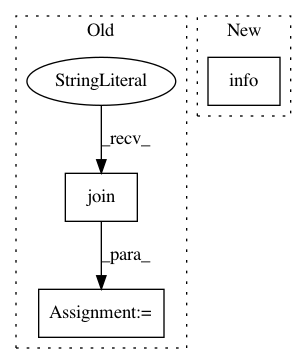

70a99a9759c8fb8d5731270639ebf95dd0e02a04,preprocess.py,,build_save_in_shards_using_shards_size,#Any#Any#Any#Any#Any#,49
Before Change
tgt_data = ftgt.readlines()
src_corpus = "".join(src_corpus.split(".")[:-1])
tgt_corpus = "".join(tgt_corpus.split(".")[:-1])
num_shards = int(len(src_data) / opt.shard_size)
for x in range(num_shards):
f = codecs.open(src_corpus + ".{0}.txt".format(x), "w",
After Change
with codecs.open(src_corpus, "r", encoding="utf-8") as fsrc:
with codecs.open(tgt_corpus, "r", encoding="utf-8") as ftgt:
logger.info("Reading source and target files: %s %s."
% (src_corpus, tgt_corpus))
src_data = fsrc.readlines()
tgt_data = ftgt.readlines()
num_shards = int(len(src_data) / opt.shard_size)
In pattern: SUPERPATTERN
Frequency: 3
Non-data size: 3
Instances
Project Name: OpenNMT/OpenNMT-py
Commit Name: 70a99a9759c8fb8d5731270639ebf95dd0e02a04
Time: 2018-10-11
Author: vince62s@yahoo.com
File Name: preprocess.py
Class Name:
Method Name: build_save_in_shards_using_shards_size
Project Name: dmlc/gluon-nlp
Commit Name: 698c10beffafa519dd5dbb7d579919c5df8f30be
Time: 2019-04-22
Author: tao.a.lv@intel.com
File Name: scripts/bert/finetune_classifier.py
Class Name:
Method Name: train
Project Name: ray-project/ray
Commit Name: 82f9c7014e2d0acd3e3869066f5dc3142ec9e7a7
Time: 2020-12-17
Author: 62982571+Gekho457@users.noreply.github.com
File Name: python/ray/autoscaler/_private/command_runner.py
Class Name: KubernetesCommandRunner
Method Name: _home